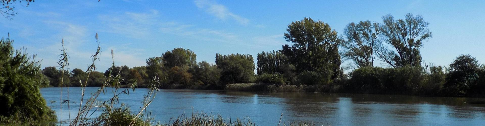

Ruta · Montgrí
Itinerari circular que sortint del bonic poble d ’Ullà ens duu a travessar el pla d’Ullà , plana agrícola per excel·lència, d’on sobresurten les extensions de pomeres traçades amb tiralínies, fins…